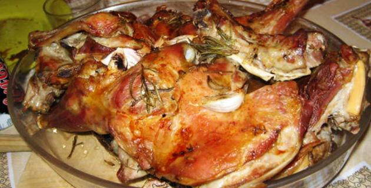
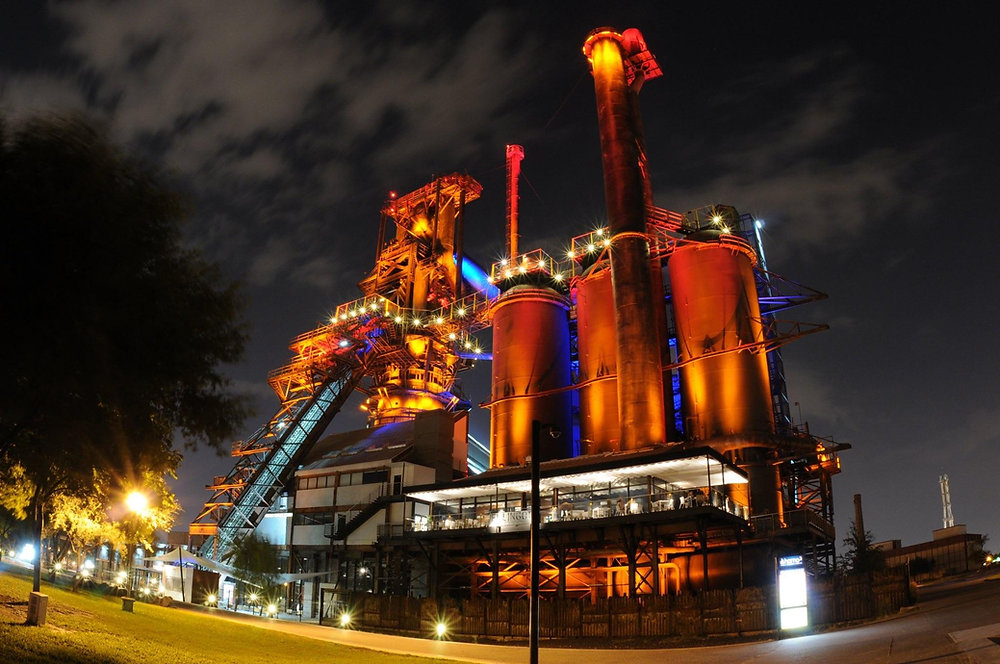

Probablemente el plato más típico de Nuevo león se sitúa en su ciudad capital, Monterrey, el cabrito será sin duda lo primero en la lista de todos cuando se les pregunte qué comida local probar. Su nombre delata lo que verás en tu plato. El cabrito se sirve de diferentes maneras: asado al pastor, al horno o en salsa.

Uno de los principales atractivos del parque es su celebración de la herencia industrial de Monterrey, el observar los altos hornos de acero, las chimeneas y demás maquinaria que hay por todo el parque. Conoce sobre el pasado industrial de la ciudad, a través de las exposiciones interactivas del Museo del Acero Horno y admira las exhibiciones de arte nacional e internacional en el Centro de las Artes y la galería de Nave Generadores. Además en el Museo de Cera Monterrey puedes ver figuras de cera de tamaño real de muchas celebridades.

Notas relevantes:
Si hablamos de sitios emblemáticos en
Monterrey, sin duda está la Macroplaza.
Cuenta con una extensión de 40 hectáreas, que es 2 veces
mayor al de la Plaza Roja de Moscú, 5 veces el tamaño de
la Plaza de San Pedro en el Vaticano y 6 veces el del
Zócalo de la Ciudad de México. Recuerda que Vía Zócalo se
encuentra a 3 cuadras de distancia de esta joya cultural.
Claro, después de Roma, Italia.
En Monterrey se encuentran la Basílica de Nuestra Señora
del Roble, la Basílica de la Purísima Concepción y la
Basílica de Guadalupe.